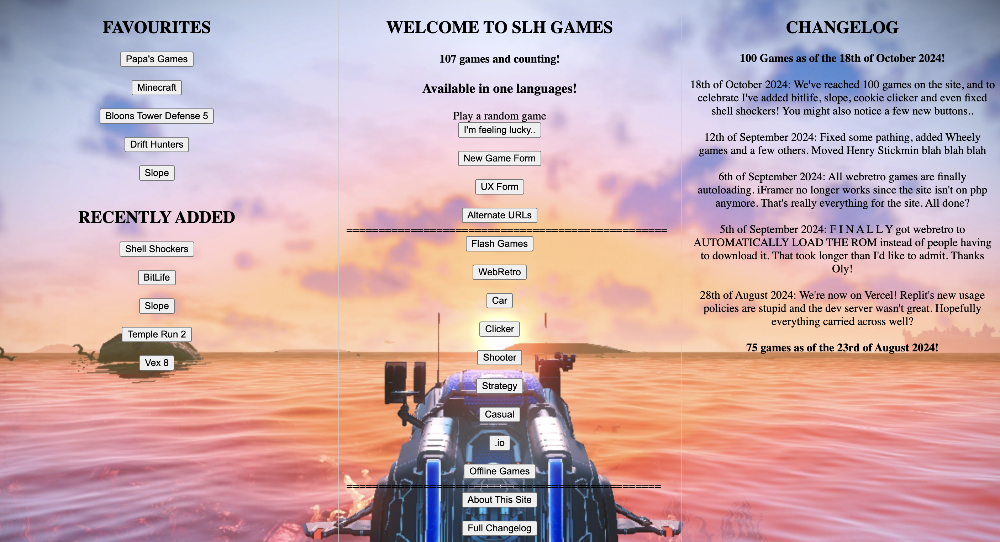

SLH
SLH or Spacepirate's Localhost is a my personal website for my various HTML projects,
such as a dashboard for my common room at school, unblocked games,
and access to important files.
The whole site took about 4 months to make from a simple HTML homepage to a fully functioning website for over 100 unblocked games.
The games range from old flash games from my personal archive, retro games,
offline games you can play from a single HTML file and even Minecraft.
The site is hosted on vercel with a few alternate URLs in case some get blocked,
but it's also hosted locally on the school network from a machine in the common room.
